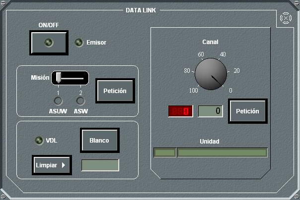
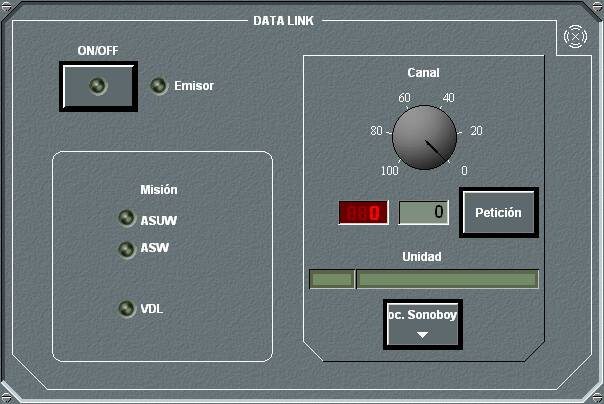

El panel de detalle del Data Link es distinto para las unidades de Superficie y la Aéreas.
Para Unidades Aéreas el panel de detalle es el siguiente:

En este panel la unidad aérea puede ejecutar las siguientes acciones sobre el Data Link:
- Encender / Apagar el equipo, pulsando el botón ON / OFF. El Led Emisor situado a su derecha indica si la unidad propia es transmisora, o por el contrario, solo receptora de información de Data Link. Cuando se enciende el Data Link, permanece en STANDBY (led amarillo) hasta que encuentre una unidad con la que enlazar. Una vez que establece el enlace, el led pasa a verde. Cuando se ha establecido enlace con otra unidad y lo pierde por el motivo que sea (fuera de alcance, equipo enlazado apagado, etc.), el equipo pasará al estado STANDBY de nuevo, hasta que encuentre una unidad con la que enlazar.
- Seleccionar la Misión (ASUW o ASW), con el selector correspondiente. Se encenderá el led luminoso correspondiente a la misión seleccionada. Si se selecciona ASUW, se transmiten todos los contactos adquiridos con Radar, Visual y ESM. Si se selecciona ASW se transmiten todos los contactos adquiridos con Sonar Activo, Sonar Pasivo, Visual, Sonoboyas, MAD y ESM. Estas opciones pueden seleccionase siempre que el equipo no sea VDL.
- Seleccionar un contacto radar para transmitir sus datos. Esta opción, que sólo puede ejercerse si el equipo es VDL, permite seleccionar un blanco con el Hook (de entre los contactos radar), y al pulsar el botón Blanco se transmiten de forma continua sus datos por el Data Link, hasta que se pierda el contacto o hasta que se pulse el botón Limpiar.
- Seleccionar el canal de comunicaciones, entre 0 y 99. Para ello se puede girar el dial o introducir manualmente el número en el campo correspondiente. Al pulsar el botón Petición se actualiza el número de canal. No se podrá seleccionar una canal que ya haya sido seleccionado para el Data Link por otra unidad aérea, aunque el equipo se encuentra apagado. Debajo del número de canal se muestra el numeral y el nombre de la unidad enlazada por Data Link.
Para Unidades de Superficie el panel de detalle es el siguiente:

El panel de detalle del Data Link para unidades de superficie tiene las siguientes diferencias con respecto al de las unidades aéreas:
- No permite seleccionar la misión. Esto es debido a que la misión del Data Link de las unidades de superficie viene dada por la selección realizada por la unidad aérea con la que tiene enlace. Si la unidad aérea cambia de misión, la de superficie cambia a dicha misión automáticamente siempre que tenga capacidad para dicha misión.
- Permite acceder al Procesador de Sonoboyas. En el caso de un helicóptero dotado de sonoboyas enlazado por Data Link con una unidad de superficie, desde esta unidad de superficie se puede acceder directamente a toda la funcionalidad del sistema de gestión de sonoboyas, incluyendo el lanzador y el procesador. Para ello, basta con pulsar el botón Proc. Sonoboyas.